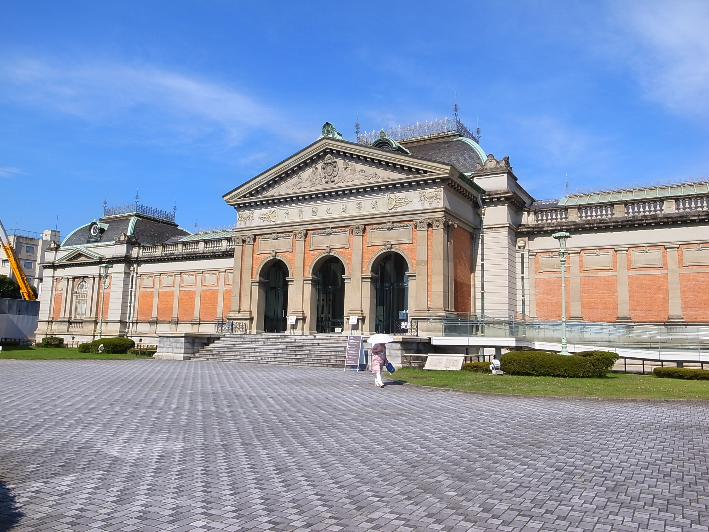
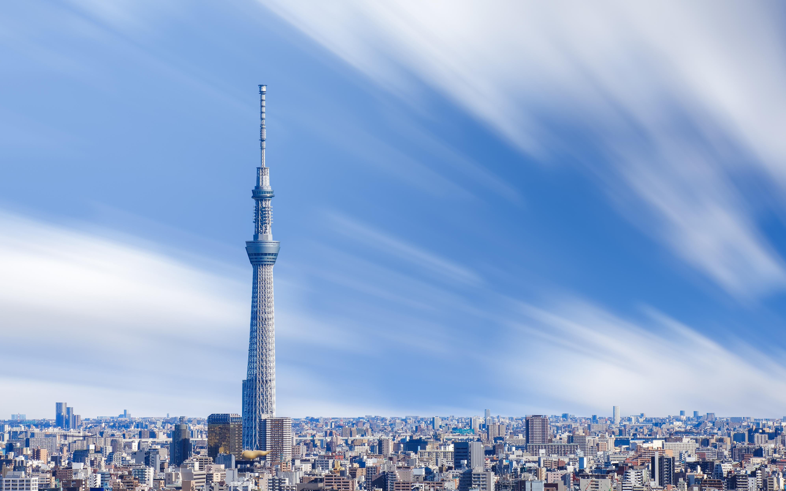
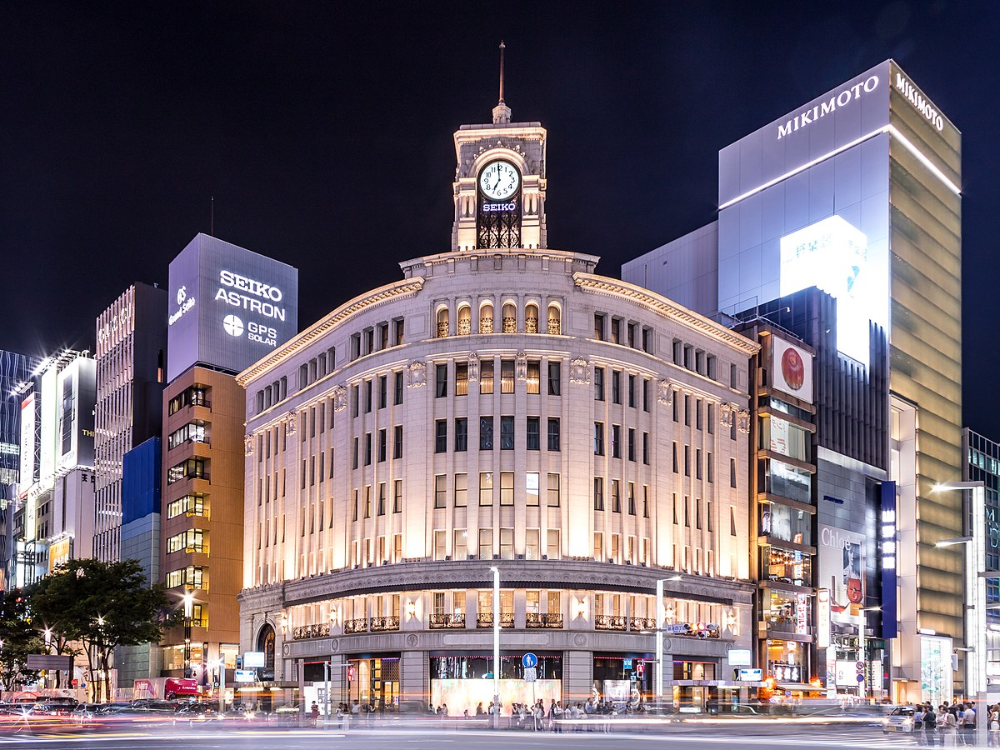

Japan is considered to be one of the safest countries in the world, and has one of the lowest global crime rates. Japanese people often leave their doors unlocked, children are perfectly safe traveling on the subway by themselves, and visitors are able to walk around the cities at night without having to worry. Japan is very clean. The Japanese really pride themselves on their cleanliness, and upon first arrival in the country you may be surprised by how sparkling clean the streets are.The Japanese people are polite and friendly like us Filipinos! The Japanese have a worldwide reputation for being uncommonly polite, friendly, and welcoming. Although the language barrier may prove a challenge at times, people in Japan usually try to be as helpful as possible if you ask anything of them.
Places I want to visit in Japan! Where do you want to go first?
KYOTO
KYOTO NATIONAL MUSEUM
Kyoto National Museum is one of the most significant museums in Japan, and there are several reasons to visit it. he museum has an extensive collection of art objects, including Buddhist statues, ceramics, calligraphy, and paintings. The collection includes more than 12,000 items, many of which are designated as National Treasures or Important Cultural Properties.
The museum is located in the heart of Kyoto, which was the capital of Japan for more than a thousand years. The museum's exhibits reflect the cultural history of Japan, including the influence of Buddhism and the samurai culture. The museum's architecture is an attraction in itself. The building is designed in the traditional Japanese style, with a focus on simplicity and elegance.
The garden surrounding the museum is also worth visiting. The museum hosts many cultural events, including workshops, lectures, and performances. These events provide an opportunity to learn more about Japanese culture and art. The museum is conveniently located near several other attractions, including the Kyoto Imperial Palace, the Nijo Castle, and the Heian Shrine. It is easily accessible by public transportation, making it a great destination for a day trip from Tokyo or Osaka.
FUSHIMI INARI TAISHA SHRINE
Fushimi Inari Taisha Shrine is a popular tourist destination in Kyoto, and there are several reasons why you should visit. The thousands of Torii gates, Fushimi Inari is famous for its thousands of bright orange torii gates that create a unique and striking visual experience. The gates are spread out along a network of trails on the mountainside and offer a scenic and peaceful walk. Fushimi Inari Taisha is one of the oldest and most important Shinto shrines in Japan, with a history dating back over 1,300 years. It is dedicated to Inari, the Shinto god of rice and prosperity, and has been a place of worship for generations of Japanese people.
The shrine is located at the base of Mount Inari, and the surrounding area is home to lush forests and stunning natural scenery. The hike to the top of the mountain takes around two to three hours, but the views are well worth the effort. The shrine has a unique atmosphere, with the sounds of chanting, the smell of incense, and the sight of the torii gates creating a peaceful and spiritual environment. The shrine is particularly beautiful during autumn when the leaves change color.
The area around Fushimi Inari Taisha is home to numerous food and souvenir stalls, selling traditional Japanese snacks, souvenirs, and lucky charms. Overall, Fushimi Inari Taisha Shrine is an essential destination for anyone visiting Kyoto. It offers a unique combination of cultural significance, natural beauty, and spiritual atmosphere that is hard to find anywhere else.
TOKYO

TOKYO SKY TOWER
There are several reasons to visit the Tokyo Sky Tower, also known as the Tokyo Skytree. Panoramic views, The Sky Tower is one of the tallest structures in the world, offering panoramic views of Tokyo and the surrounding area. From the observation deck, which is located at a height of 450 meters (1,476 feet), you can see all the way to Mount Fuji on a clear day. The Sky Tower's architectural design is impressive, with a sleek and modern aesthetic that stands out against Tokyo's traditional buildings. The tower is also illuminated at night, creating a stunning sight against the city skyline.
Shopping and dining, The Sky Tower has several floors dedicated to shopping and dining, offering a wide range of options from high-end restaurants to fast food chains. The tower also has a souvenir shop where you can purchase Tokyo-themed gifts and souvenirs. The Sky Tower hosts several cultural events throughout the year, including traditional Japanese festivals, exhibitions, and performances. These events provide a unique opportunity to learn about Japanese culture and customs.

It is family-friendly activities, The Sky Tower has several family-friendly activities, including an aquarium and a planetarium. There is also a glass-floor observation deck, which allows visitors to see the view directly below their feet. Overall, the Tokyo Sky Tower is an excellent destination for anyone visiting Tokyo. It offers a unique combination of panoramic views, architectural design, shopping, dining, cultural experiences, and family-friendly activities, making it a must-see attraction in Tokyo.
GINZA
here are several reasons to visit Ginza, one of the most popular districts in Tokyo. Shopping, Ginza is known as a shopping paradise, with a plethora of high-end boutiques, department stores, and luxury brands. The district is home to many flagship stores of famous Japanese brands such as Uniqlo, Muji, and Shiseido, as well as international brands such as Gucci, Chanel, and Apple. Ginza is a food lover's haven, offering a wide range of restaurants serving both traditional Japanese cuisine and international cuisine. You can find anything from sushi and ramen to French and Italian cuisine, as well as many upscale dining options.
Ginza is famous for its stylish and modern architecture, with several buildings designed by world-renowned architects such as Kenzo Tange and Shigeru Ban. The district is also home to many historic buildings, including the Wako Building, a cultural property of Japan. It is a cultural hub of Tokyo, with several art galleries, museums, and theaters. The Kabuki-za theater is located in Ginza, where you can experience traditional Japanese theater. There are also many other cultural events and exhibitions held in Ginza throughout the year.
Nightlife in Ginza has a vibrant nightlife scene, with many bars, clubs, and lounges. You can find everything from chic cocktail bars to more relaxed pubs and izakayas, making it a great place to unwind and socialize. Overall, visiting Ginza is an excellent way to experience Tokyo's fashion, food, culture, architecture, and nightlife all in one place. It is a must-see destination for anyone visiting Tokyo.
Japan have incredible natural landscapes and pristine natural scenery. Japan's scenery is my main point for visiting there since I love the natural and beautiful sceneries since it soothes my inner self and let me feel alive